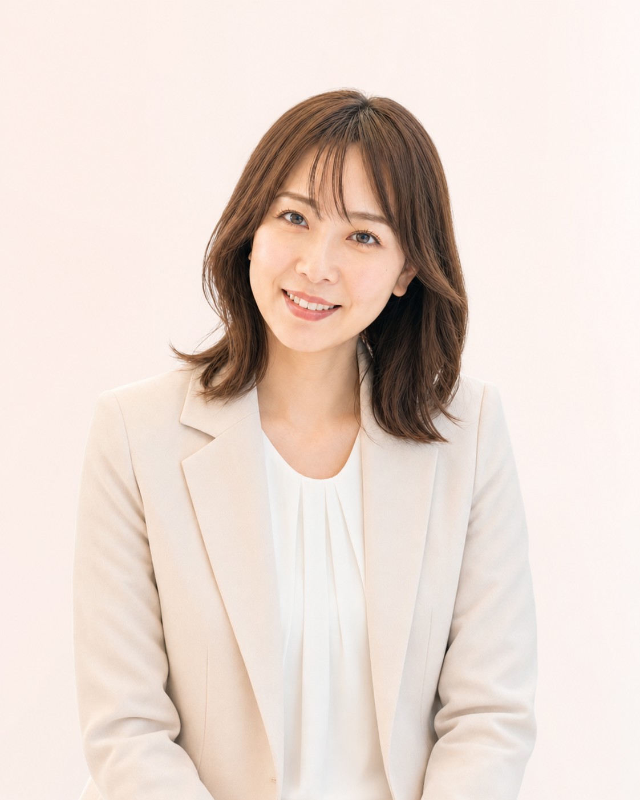

婚活経験者の
仲人がサポート
婚活経験があるからこそ、あなたの気持ちに寄り添い、親身にサポートします。
山梨・甲府の婚活相談所
出会いづくりから成婚まで、婚活経験者の仲人が
あなたの気持ちに寄り添い、伴走します。
お見合い料0円
申込人数無制限
全国1,400社ネットワーク
婚活に悩むあなたへ
まつりかは、山梨・甲府を拠点に、30代から60代まで幅広い方の婚活をサポートしています。地域に根ざしながら、全国の会員様とつながることで、あなたの未来を広げるお手伝いをします。
職場や日常で新しい出会いがなく、将来が不安になる時がある。
周りに相談しづらく、ひとりで悩んでしまっている。
どのサービスが自分に合うのか分からず、一歩を踏み出せない。
OUR STRENGTHS
婚活経験があるからこそ、あなたの気持ちに寄り添い、親身にサポートします。

費用や申込数を気にせず、出会いのチャンスを最大限に広げられます。

全国の結婚相談所とつながり、あなたに合ったお相手との出会いを支援します。

スピーディーな成婚実績も。一人ひとりに合った活動で未来へ進みます。
MATCHMAKER
HOW IT WORKS
まずは気軽にご相談ください。
お悩みや希望を丁寧に伺います。
ご希望条件に合う方をご紹介します。
成婚までしっかりサポートします。
FAQ
はい、もちろんです。男性のご相談も承っていますので、ひとりで悩まずお気軽にご相談ください。
はい、大丈夫です。婚活が初めての方にも丁寧に活動方法をご案内します。
はい。全国1,400社のネットワークを活用して、山梨県外の方とも出会えます。
はい。入会前の無料相談をご利用いただけます。無理な勧誘はありません。

FREE CONSULTATION
無理な勧誘は一切ありません。あなたのお悩みを整理するところから、一緒に始めましょう。